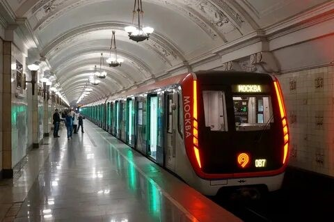

В истории Московского метрополитена существовало множество различных типов метро-поездов. На данный момент курсируют 4 вида: 81-717/714 «Номерной», 81-740/741 «Русич», 81-760/761 «Ока», и 81-765/766/767 «Москва». Далее подробно о каждом.
- «Номерной»

Номерными они названы не просто так, а потому, что это первые вагоны, не получившие буквенного обозначения. Изначально предполагалось, что данный тип станет мелкосерийным и переходным к вагонам типа И, однако из-за недоработок в конструкции последних было налажено крупносерийное производство данного типа. Выпускались как Мытищинским, так и Ленинградским заводом.
Основными отличиями от вагонов типов Ем и Еж, конструкцию которых вагоны данного типа в значительной степени унаследовали, стало появление в составе промежуточных вагонов без кабины управления и новая конструкция лобовой части головных вагонов без торцевой двери с увеличенным количеством буферных фонарей меньшего размера, также лампы накаливания в салонах были заменены на люминесцентные. Головные вагоны имеют по 42 сидячих места, промежуточные — 48, у части вагонов трёхместные торцевые сиденья заменены двухместными с уменьшением числа мест до 40 и 44 соответственно.
С 1990-х годов самые многочисленные в московском метро, в разные годы использовались на всех линиях, кроме Арбатско-Покровской и линий, открытых после 2018 года (Большой кольцевой и Некрасовской). Сейчас обслуживают две линии полностью и две частично. Вагоны этой модели полностью окрашивались в серо-зелёный цвет и имеют декоративную белую полосу (молдинг) местами с чёрной окантовкой на нём и с X-образными рисунками на дверях. Эксплуатируется несколько различных модификаций: - «Русич»

Вагоны этого типа изначально создавались для надземных линий лёгкого метро и получили принципиально новую двухсекционную конструкцию вагонов, отличающую их от всех прочих вагонов Московского метрополитена. Производились на заводе «Метровагонмаш» .
Каждый вагон представляет собой две сочленённые секции на трёх тележках, при этом полная длина вагона значительно превышает длину стандартных вагонов. Новшествами в конструкции российских вагонов метро стали сочленённый кузов с лобовой маской наклонной формы и гладкими вертикальными боковыми и торцевыми стенками, прислонно-сдвижные двери, система
принудительной вентиляции с решётчатым потолком, наддверные маршрутные табло и непрерывные световые линии в салонах. Также это были первые российские серийные вагоны, имеющие асинхронный тяговый привод и микропроцессорную систему управления. Поезда имеют трёхцветную окраску: тёмно-серый верх, светло-серый низ, голубая полоса-разделитель и нижняя половина дверей.
Эксплуатируются четыре модификации вагонов: - «Ока»
81-760/761 «Ока» — модель электровагонов метрополитена, выпускавшихся заводом ОАО «Метровагонмаш» с 2010 года и Тверским вагоностроительным заводом с 2011 года по 2016 год. Вагон модели 81-760 является моторным головным (Мг), модели 81-761 — моторным промежуточным (Мп). На основе базовой модели также были созданы поезда модификаций А (81-760А/761А/763А «Ока») и Б (81-760Б/761Б/763Б «Ока») со сквозным проходом с вагонами модели 81-763 — прицепной промежуточный (Пп). Всего в период с 2010 по 2016 год было выпущено 168 составов «Ока», включая 162 восьмивагонных состава базовой модели, три восьмивагонных состава модификации А и три пятивагонных состава модификации Б. В настоящее время базовая модель и модификация А эксплуатируются в Москве, а модификация Б — в Баку.
Эксплуатируются три модификации вагонов: - «Москва»

81-765/766/767 «Москва» — тип электровагонов метрополитена, разработанный и выпускаемый с 2016 года заводом ОАО «Метровагонмаш» и Октябрьским электровагоноремонтным заводом (ОЭВРЗ) с 2018 по 2020 год по заказу Московского метрополитена . Вагоны модели 81-765 — моторные головные, 81-766 — моторные промежуточные, 81-767 — прицепные (безмоторные) промежуточные . Кузов вагонов «Москва» послужил основой для других моделей. В частности — поезда «Балтиец» (81-725.1/726.1/727.1) для Петербургского метрополитена.
Эксплуатируются четыре модификации вагонов:
сделали Лядов Тимофей и Никитин Станислав